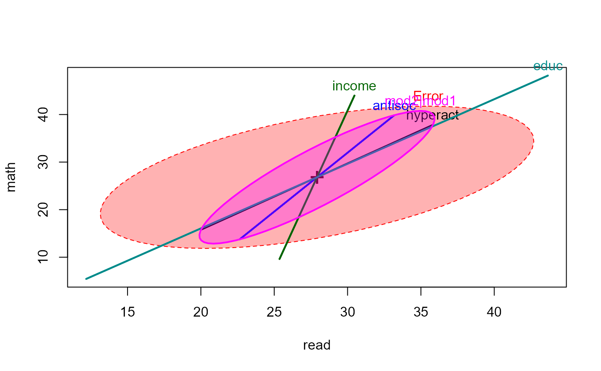
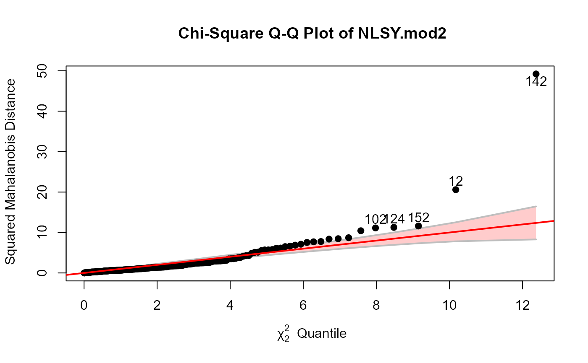
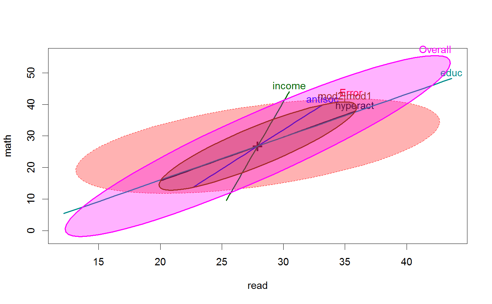

<!-- Generated by pkgdown: do not edit by hand -->
<!DOCTYPE html>
<html>
  <head>
  <meta charset="utf-8">
<meta http-equiv="X-UA-Compatible" content="IE=edge">
<meta name="viewport" content="width=device-width, initial-scale=1.0">

<title>National Longitudinal Survey of Youth Data — NLSY • heplots</title>

<!-- jquery -->
<script src="https://code.jquery.com/jquery-3.1.0.min.js" integrity="sha384-nrOSfDHtoPMzJHjVTdCopGqIqeYETSXhZDFyniQ8ZHcVy08QesyHcnOUpMpqnmWq" crossorigin="anonymous"></script>
<!-- Bootstrap -->
<link href="https://maxcdn.bootstrapcdn.com/bootswatch/3.3.7/cerulean/bootstrap.min.css" rel="stylesheet" crossorigin="anonymous">

<script src="https://maxcdn.bootstrapcdn.com/bootstrap/3.3.7/js/bootstrap.min.js" integrity="sha384-Tc5IQib027qvyjSMfHjOMaLkfuWVxZxUPnCJA7l2mCWNIpG9mGCD8wGNIcPD7Txa" crossorigin="anonymous"></script>

<!-- Font Awesome icons -->
<link href="https://maxcdn.bootstrapcdn.com/font-awesome/4.6.3/css/font-awesome.min.css" rel="stylesheet" integrity="sha384-T8Gy5hrqNKT+hzMclPo118YTQO6cYprQmhrYwIiQ/3axmI1hQomh7Ud2hPOy8SP1" crossorigin="anonymous">


<!-- pkgdown -->
<link href="../pkgdown.css" rel="stylesheet">
<script src="../jquery.sticky-kit.min.js"></script>
<script src="../pkgdown.js"></script>
  
  
<!-- mathjax -->
<script src='https://mathjax.rstudio.com/latest/MathJax.js?config=TeX-AMS-MML_HTMLorMML'></script>

<!--[if lt IE 9]>
<script src="https://oss.maxcdn.com/html5shiv/3.7.3/html5shiv.min.js"></script>
<script src="https://oss.maxcdn.com/respond/1.4.2/respond.min.js"></script>
<![endif]-->


  </head>

  <body>
    <div class="container template-reference-topic">
      <header>
      <div class="navbar navbar-default navbar-fixed-top" role="navigation">
  <div class="container">
    <div class="navbar-header">
      <button type="button" class="navbar-toggle collapsed" data-toggle="collapse" data-target="#navbar">
        <span class="icon-bar"></span>
        <span class="icon-bar"></span>
        <span class="icon-bar"></span>
      </button>
      <a class="navbar-brand" href="../index.html">heplots</a>
    </div>
    <div id="navbar" class="navbar-collapse collapse">
      <ul class="nav navbar-nav">
        <li>
  <a href="../index.html">
    <span class="fa fa-home fa-lg"></span>
     
  </a>
</li>
<li>
  <a href="../reference/index.html">Reference</a>
</li>
      </ul>
      
      <ul class="nav navbar-nav navbar-right">
        
      </ul>
    </div><!--/.nav-collapse -->
  </div><!--/.container -->
</div><!--/.navbar -->

      
      </header>

      <div class="row">
  <div class="col-md-9 contents">
    <div class="page-header">
    <h1>National Longitudinal Survey of Youth Data</h1>
    </div>

    
    <p>The dataset come from a small random sample of 
the U.S. National Longitudinal Surve of Youth.</p>
    

    <pre class="usage"><span class='fu'>data</span>(<span class='no'>NLSY</span>)</pre>
        
    <h2 class="hasAnchor" id="format"><a class="anchor" href="#format"></a>Format</h2>

    <p>A data frame with 243 observations on the following 6 variables.</p><dl class='dl-horizontal'>
    <dt><code>math</code></dt><dd><p>Math achievement test score</p></dd>
    <dt><code>read</code></dt><dd><p>Reading achievement test score</p></dd>
    <dt><code>antisoc</code></dt><dd><p>score on a measure of child's antisocial behavior, <code>0:6</code></p></dd>
    <dt><code>hyperact</code></dt><dd><p>score on a measure of child's hyperactive behavior, <code>0:5</code></p></dd>
    <dt><code>income</code></dt><dd><p>yearly income of child's father</p></dd>
    <dt><code>educ</code></dt><dd><p>years of education of child's father</p></dd>
  </dl>
    
    <h2 class="hasAnchor" id="details"><a class="anchor" href="#details"></a>Details</h2>

    <p>In this dataset, <code>math</code> and <code>read</code> scores are taken at the outcome
variables.
Among the remaining predictors, <code>income</code> and <code>educ</code> might be
considered as background variables necessary to control for.
Interest might then be focused on whether 
the behavioural variables <code>antisoc</code> and <code>hyperact</code> contribute beyond that.</p>
    
    <h2 class="hasAnchor" id="source"><a class="anchor" href="#source"></a>Source</h2>

    <p>This dataset was derived from a larger one used by Patrick Curran
at the 1997 meeting of the Society for Research on Child Development (SRCD).
A description now only exists on the WayBack Machine,
<a href='http://web.archive.org/web/20050404145001/http://www.unc.edu/~curran/example.html'>http://web.archive.org/web/20050404145001/http://www.unc.edu/~curran/example.html</a>.</p>
<p>More details are available at
<a href='http://web.archive.org/web/20060830061414/http://www.unc.edu/~curran/srcd-docs/srcdmeth.pdf'>http://web.archive.org/web/20060830061414/http://www.unc.edu/~curran/srcd-docs/srcdmeth.pdf</a>.</p>
    

    <h2 class="hasAnchor" id="examples"><a class="anchor" href="#examples"></a>Examples</h2>
    <pre class="examples"><div class='input'><span class='fu'>data</span>(<span class='no'>NLSY</span>)

<span class='co'>#examine the data</span>
<span class='fu'>scatterplotMatrix</span>(<span class='no'>NLSY</span>, <span class='kw'>smooth</span><span class='kw'>=</span><span class='fl'>FALSE</span>)</div><div class='img'></div><div class='input'>
<span class='co'># test control variables by themselves</span>
<span class='co'># -------------------------------------</span>
<span class='no'>mod1</span> <span class='kw'>&lt;-</span> <span class='fu'>lm</span>(<span class='fu'>cbind</span>(<span class='no'>read</span>,<span class='no'>math</span>) ~ <span class='no'>income</span>+<span class='no'>educ</span>, <span class='kw'>data</span><span class='kw'>=</span><span class='no'>NLSY</span>)
<span class='fu'>Anova</span>(<span class='no'>mod1</span>)</div><div class='output co'>#&gt; 
#&gt; Type II MANOVA Tests: Pillai test statistic
#&gt;        Df test stat approx F num Df den Df   Pr(&gt;F)   
#&gt; income  1  0.034469   4.2661      2    239 0.015121 * 
#&gt; educ    1  0.051521   6.4912      2    239 0.001798 **
#&gt; ---
#&gt; Signif. codes:  0 <U+0091>***<U+0092> 0.001 <U+0091>**<U+0092> 0.01 <U+0091>*<U+0092> 0.05 <U+0091>.<U+0092> 0.1 <U+0091> <U+0092> 1</div><div class='input'><span class='fu'><a href='heplot.html'>heplot</a></span>(<span class='no'>mod1</span>, <span class='kw'>fill</span><span class='kw'>=</span><span class='fl'>TRUE</span>)</div><div class='img'></div><div class='input'>
<span class='co'># test of overall regression</span>
<span class='no'>coefs</span> <span class='kw'>&lt;-</span> <span class='fu'>rownames</span>(<span class='fu'>coef</span>(<span class='no'>mod1</span>))[-<span class='fl'>1</span>]
<span class='fu'>linearHypothesis</span>(<span class='no'>mod1</span>, <span class='no'>coefs</span>)</div><div class='output co'>#&gt; 
#&gt; Sum of squares and products for the hypothesis:
#&gt;           read     math
#&gt; read  859.6586 1474.716
#&gt; math 1474.7164 2929.558
#&gt; 
#&gt; Sum of squares and products for error:
#&gt;          read     math
#&gt; read 22882.46 12051.69
#&gt; math 12051.69 23763.79
#&gt; 
#&gt; Multivariate Tests: 
#&gt;                  Df test stat  approx F num Df den Df     Pr(&gt;F)    
#&gt; Pillai            2 0.1166962  7.435629      4    480 8.1261e-06 ***
#&gt; Wilks             2 0.8840660  7.594147      4    478 6.1527e-06 ***
#&gt; Hotelling-Lawley  2 0.1302750  7.751361      4    476 4.6699e-06 ***
#&gt; Roy               2 0.1232808 14.793699      2    240 8.7377e-07 ***
#&gt; ---
#&gt; Signif. codes:  0 <U+0091>***<U+0092> 0.001 <U+0091>**<U+0092> 0.01 <U+0091>*<U+0092> 0.05 <U+0091>.<U+0092> 0.1 <U+0091> <U+0092> 1</div><div class='input'><span class='fu'><a href='heplot.html'>heplot</a></span>(<span class='no'>mod1</span>, <span class='kw'>fill</span><span class='kw'>=</span><span class='fl'>TRUE</span>, <span class='kw'>hypotheses</span><span class='kw'>=</span><span class='fu'>list</span>(<span class='st'>"Overall"</span><span class='kw'>=</span><span class='no'>coefs</span>))</div><div class='img'></div><div class='input'>

<span class='co'># additional contribution of antisoc + hyperact over income + educ</span>
<span class='co'># ----------------------------------------------------------------</span>
<span class='no'>mod2</span> <span class='kw'>&lt;-</span> <span class='fu'>lm</span>(<span class='fu'>cbind</span>(<span class='no'>read</span>,<span class='no'>math</span>) ~ <span class='no'>antisoc</span> + <span class='no'>hyperact</span> + <span class='no'>income</span> + <span class='no'>educ</span>, <span class='kw'>data</span><span class='kw'>=</span><span class='no'>NLSY</span>)
<span class='fu'>Anova</span>(<span class='no'>mod2</span>)</div><div class='output co'>#&gt; 
#&gt; Type II MANOVA Tests: Pillai test statistic
#&gt;          Df test stat approx F num Df den Df   Pr(&gt;F)   
#&gt; antisoc   1  0.019343   2.3374      2    237 0.098803 . 
#&gt; hyperact  1  0.014442   1.7364      2    237 0.178380   
#&gt; income    1  0.038280   4.7167      2    237 0.009801 **
#&gt; educ      1  0.053152   6.6521      2    237 0.001546 **
#&gt; ---
#&gt; Signif. codes:  0 <U+0091>***<U+0092> 0.001 <U+0091>**<U+0092> 0.01 <U+0091>*<U+0092> 0.05 <U+0091>.<U+0092> 0.1 <U+0091> <U+0092> 1</div><div class='input'>
<span class='no'>coefs</span> <span class='kw'>&lt;-</span> <span class='fu'>rownames</span>(<span class='fu'>coef</span>(<span class='no'>mod2</span>))[-<span class='fl'>1</span>]
<span class='fu'><a href='heplot.html'>heplot</a></span>(<span class='no'>mod2</span>, <span class='kw'>fill</span><span class='kw'>=</span><span class='fl'>TRUE</span>, <span class='kw'>hypotheses</span><span class='kw'>=</span><span class='fu'>list</span>(<span class='st'>"Overall"</span><span class='kw'>=</span><span class='no'>coefs</span>, <span class='st'>"mod2|mod1"</span><span class='kw'>=</span><span class='no'>coefs</span>[<span class='fl'>1</span>:<span class='fl'>2</span>]))</div><div class='img'></div><div class='input'><span class='fu'>linearHypothesis</span>(<span class='no'>mod2</span>, <span class='no'>coefs</span>[<span class='fl'>1</span>:<span class='fl'>2</span>])</div><div class='output co'>#&gt; 
#&gt; Sum of squares and products for the hypothesis:
#&gt;          read     math
#&gt; read 170.3478 261.2230
#&gt; math 261.2230 516.0188
#&gt; 
#&gt; Sum of squares and products for error:
#&gt;          read     math
#&gt; read 22712.12 11790.46
#&gt; math 11790.46 23247.77
#&gt; 
#&gt; Multivariate Tests: 
#&gt;                  Df test stat approx F num Df den Df   Pr(&gt;F)  
#&gt; Pillai            2 0.0239869 1.444548      4    476 0.218172  
#&gt; Wilks             2 0.9760624 1.444284      4    474 0.218264  
#&gt; Hotelling-Lawley  2 0.0244741 1.443972      4    472 0.218372  
#&gt; Roy               2 0.0221965 2.641385      2    238 0.073351 .
#&gt; ---
#&gt; Signif. codes:  0 <U+0091>***<U+0092> 0.001 <U+0091>**<U+0092> 0.01 <U+0091>*<U+0092> 0.05 <U+0091>.<U+0092> 0.1 <U+0091> <U+0092> 1</div><div class='input'>
<span class='fu'><a href='heplot.html'>heplot</a></span>(<span class='no'>mod2</span>, <span class='kw'>fill</span><span class='kw'>=</span><span class='fl'>TRUE</span>, <span class='kw'>hypotheses</span><span class='kw'>=</span><span class='fu'>list</span>(<span class='st'>"mod2|mod1"</span><span class='kw'>=</span><span class='no'>coefs</span>[<span class='fl'>1</span>:<span class='fl'>2</span>]))</div><div class='img'></div><div class='input'>
</div></pre>
  </div>
  <div class="col-md-3 hidden-xs hidden-sm" id="sidebar">
    <h2>Contents</h2>
    <ul class="nav nav-pills nav-stacked">
      
      <li><a href="#format">Format</a></li>

      <li><a href="#details">Details</a></li>

      <li><a href="#source">Source</a></li>
      
      <li><a href="#examples">Examples</a></li>
    </ul>

  </div>
</div>

      <footer>
      <div class="copyright">
  <p>Developed by John Fox, Michael Friendly.</p>
</div>

<div class="pkgdown">
  <p>Site built with <a href="http://hadley.github.io/pkgdown/">pkgdown</a>.</p>
</div>

      </footer>
   </div>

  </body>
</html>
